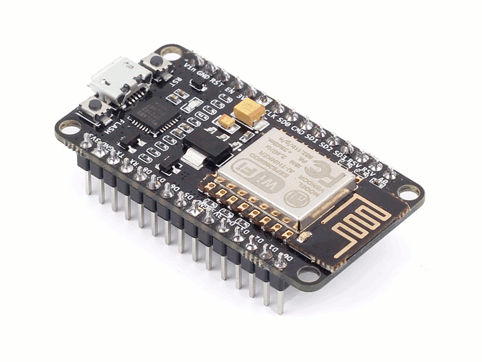

ESP8266

original image: zeptobars.com

original image: zeptobars.com
Originally came to prominence as a WiFi controller for AVR and similar, but ...
| Arduino | ESP8266 | RPi 2 |
|---|---|---|
| AVR ATMega328P | Tensilica Xtensa LX106 | ARM Cortex A53 |
| 8 bit | 32 bit | 32 bit |
| 1 core | 1 core | 4 core |
| 20 MHz | 80-160 MHz | 900 MHz |
| 2 KB RAM | 160 KB RAM | 1 GB RAM |
| 32 KB Flash | 4 MB Flash | MicroSDHC |
original image: adafruit.com

original image: adafruit.com

original image: adafruit.com
image: Random Nerd Tutorials
"Witty Cloud" / Node MCU / WeMOS D1
github: themadinventor/esptool
$ git clone https://github.com/themadinventor/esptool.git
$ pip install esptool
$ apt install esptool
$ git clone --recursive https://github.com/pfalcon/esp-open-sdk $ sudo apt-get install make unrar autoconf automake \ libtool gcc g++ gperf flex bison texinfo gawk \ ncurses-dev libexpat-dev python-dev python python-serial \ sed git unzip bash help2man wget bzip2 libtool-bin $ cd esp-open-sdk $ make
$ xtensa-lx106-elf/bin/xtensa-lx106-elf-gcc --version
xtensa-lx106-elf-gcc (crosstool-NG
crosstool-ng-1.22.0-55-gecfc19a) 4.8.5
$ export PATH=`realpath xtensa-lx106-elf/bin/`:$PATH
... and thanks to a successful Kickstarter campaign and Damien George ...
Use esptool to load onto board:
$ export ESPTOOL_PORT=/dev/ttyUSB0 $ export ESPTOOL_BAUD=115200 $ export ESPTOOL_FS=32m $ esptool write_flash 0 esp8266-20161017-v1.8.5.bin
$ cu -l /dev/ttyUSB0 -s 115200
MicroPython v1.8.5-10-g0e69e6b on 2016-10-17; ESP module with ESP8266
Type "help()" for more information.
>>> dir()
['uos', '__name__', 'gc', 'bdev', 'vfs']
>>> print("Hello, World!")
Hello, World!
>>>
>>> import machine >>> import time >>> pin2 = machine.Pin(2) >>> pin2.init(machine.Pin.OUT) >>> while True: ... pin2.low() ... time.sleep(0.5) ... pin2.high() ... time.sleep(0.5)
import machine
class Servo:
def __init__(self, pin):
self.pwm = machine.PWM(pin)
self.pwm.freq(50)
def set(self, pos):
pulse_us = 1000 + 1000 * min(1,max(pos,0))
self.pwm.duty(int(pulse_us * self.pwm.freq() * 0.001024))
p2 = machine.Pin(2, machine.Pin.OUT)
s2 = Servo(p2)
>>> import network
>>> sta_if = network.WLAN(network.STA_IF)
>>> sta_if.active(True)
>>> sta_if.scan()
>>> sta_if.connect("my_ap", "my_password")
>>> import socket
>>> sock = socket.socket(socket.AF_INET)
>>> sock.bind(('0.0.0.0', 80))
>>> sock.listen(5)
>>> sock.accept()
(<socket state=2 timeout=-1 incoming=0 off=0>, ('10.107.1.4', 37464))
$ (cd unix; make axtls; make)
$ unix/micropython -m upip install \
-p esp8266/modules micropython-functools

If you're interested in Microcontrollers / IoT / Robotics:
| Arduino | ESP8266 | ESP32 | RPi 2 |
|---|---|---|---|
| AVR ATMega328P | Tensilica Xtensa LX106 | Tensilica Xtensa LX6 | ARM Cortex A53 |
| 8 bit | 32 bit | 32 bit | 32 bit |
| 1 core | 1 core | 2 core | 4 core |
| 20 MHz | 80-160 MHz | 240 MHz | 900 MHz |
| 2 KB RAM | 160 KB RAM | 520 KB RAM | 1 GB RAM |
| 32 KB Flash | 4 MB Flash | 16 MB Flash | MicroSDHC |
Nick Moore
Mnemote Pty Ltd
Slides:
Content and images © Mnemote Pty Ltd except where otherwise noted